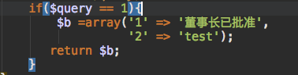

request
发起
我们直接引入jQuery库来发起，也有研究过promise，fetch，async等原生写法。可能缘分没到，还没用起来233。。

如图所示，完成一个简单的发起，这里要考验的是data是以什么类型发起的，如图我就是以单个key=>value形式发起。
假如data要以要以数组的形式发起，可以这样，把整个表单的值提交

假如data只提交checkbox的索引值，可以这样，把选取到的值放入sList这个变量中
总之，提交的姿势很多，之后在各框架controller中做处理
response
接收
当data提交成功后，我们在controller中也做了相应的处理，这时就要返回一个信息给ajax的response，让其在view页面做相应的处理。
以ci为例，当时直接在ci中的controller做sql执行完的逻辑判断，愣是没有输出任何内容到view中。后面试试在model中判断然后返回一个数组。成功了居然！！！
model中

controller中接受并且返回到view，这里注意一定要以echo形式输出，不能用return
view接受页面，要说接收这样的对象数组，不要用JSON对象的任何方法，以为其压根就不是json文件，血与泪的教训，当时一直在试取key或者value的值，什么$.each、for..in遍历就是取不到！！！后面直接alert(obj[1])直接出来！！！此乃深坑

成功页面